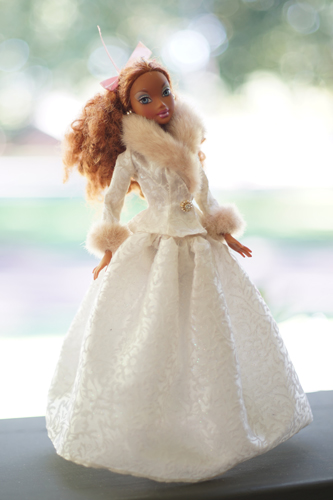

I cannot stand dogs. I hate them so much.
Everyday I see misbehaving dogs. I hear dogs in houses that never stop barking. I walk past them in yards and they jump up on the fence and snarl at me. I am afraid every large dog is going to overpower their weak owners and jump on me. Don't worry! He's friendly!
Every time I go shopping, I see people with dogs in their carts. I often hear that it's too hot to leave a dog in the car. While this is true, I don't think I believe every single person who brings their dog to the grocery store is homeless. I don't want your dog's ass where my groceries are going. That's disgusting. Leave your damn dog at home.
Did everyone just buy a pandemic pup and forget to train it? It feels so much worse than before. I don't remember seeing dogs in shopping carts so much although non stop barking dogs have always existed. How do people live that way? It's awful.
I'm sure no one intends to leave their dog completely loose but... please.. be more careful! And don't let your untrained dog walk around next to you loose either!! I am going to be eaten.
If you are someone who has trained their dog well and has full control over it, disregard this. You don't have to eat your dog.
Mysterious thrift finds:
holy cow was I happy to find one of these. amazing score because I was planning to buy one of these for ryan someday (ryan dont read this)
The white stick looks like it's been used, but everything else looks close to perfect. What a good find! It makes me regret buying the blick sticks at the beginning of the summer. patience pays off well sometimes
I wasn't previously aware this CD existed but I have to own every Bieber CD. Believe was a good album anyway.
My first and last Cher CD. I don't want any more.
Time to decide if Janet is actually good or not I guess.
I would never spend this much on a pyrex... unless it had hello kitty on it.
Who wants my DVD copy??? It's a good movie and I don't need 2.
If you recall the Barbie dress from blog post 79, I didn't actually have a doll to put it on (because I don't like fashion dolls). So! Instead of buying a barbie, I dug deep into the basement to find one from when I was little. They all kind of looked the same and very boring... But...! I found the perfect model for it! My Scene Madison! She was the prettiest doll in that pile. There was also Nolee and Chelsea as top contenders. That line was not bad at all.
Remember how these girls came with a mix CD? I remember listening to Nolee's on repeat! I probably have every song on it memorized. I still have that CD but where did my copy of Hampster Dance go?